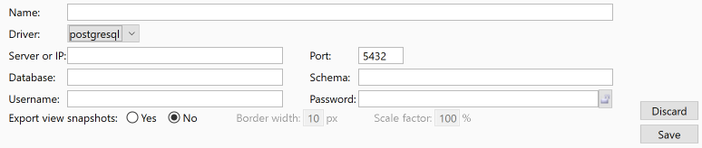

Configuring the plugin
The plugin can be configured through a preference page that can be accessed using Archi menu Edit / Preference / Database plugin.
This preference page provides two tabs:
1. Behaviour
This tab allows to change the plugin behaviour.

1.1. Version
This box shows up the actual plugin's version.
The check for update button allows to check if a new version is available on GitHub and automatically download it.
The Automatically check for update at startup allows to automate this check when Archi is started.
Should Archi be behind a corporate proxy, one may define the following entries in the Archi.ini file:
1.2. Databases
This box shows an array with all the databases that have been defined to to plugin.
Databases must be defined with the following information:
- Name: Name of the database entry in the array. This is just a label and may contain spaces but it must be unique.
- Driver: Driver used to connect to the database. This supported drivers are:
- ms-sql (Microsoft SQL Server)
- mysql (MySQL and MariaDB
- neo4j (graph database)
- oracle
- sqlite
1.2.1. Client/server relational databases

In addition, the following information is required for MS SQL, MySQL and Oracle databases:
- Server or IP: DNS name or IP address of the server where the database stands
- Port: TCP port on which the server listens
- Database name: Name of the database (lease empty to connect to the default database)
- Schema: Name of the schema (leave empty to connect to the default schema)
- Username and Password: Credentials used to connect to the database
- Export type:: Choose what the plugin should export in the database:
- Whole model: The whole model is exported, including the views and images. This mode allows the models to be imported back from the database to Archi.
- Elements and relationships only: Only a part of the model is exported (the elements and the relationships) : the model itself, the views and the images are not exported. This mode does not allow to import back the models from the database to Archi.
- Export mode: Choose how the plugin should behave in case several people work on the same model at the same time (more details on the Model export help page):
- Collaborative mode: In this mode, the export process is more like a sync process and merges the updates done with those made by the other people. slower than the standalone one, this mode may be chosen in case sereral people may work on the same model at one time.
- Standalone mode: In this mode, the plugin exports the updates without checking those made by other people. Quicker than the collaborative one, this mode may be chosen in case only one person work on a model at one time.
- Export view Images: Choose if the plugin should export a snapshot on the views in the database (JPG format). In this case, you must choose the:
- Border width in pixels (between 0 and 50)
- Scale factor in percentage (between 10% and 500%)
1.2.2. SQLite databases
In addition, the following information is required for SQLite databases:
- File: Path of the database file. On Windows, the file may be hosted on a network drive. The Browse button allows to browse the desktop disks to choose the database file.
- Export type:: Choose what the plugin should export in the database:
- Whole model: The whole model is exported, including the views and images. This mode allows the models to be imported back from the database to Archi.
- Elements and relationships only: Only a part of the model is exported (the elements and the relationships) : the model itself, the views and the images are not exported. This mode does not allow to import back the models from the database to Archi.
- Export mode: Choose how the plugin should behave in case several people work on the same model at the same time (more details on the Model export help page):
- Collaborative mode: In this mode, the export process is more like a sync process and merges the updates done with those made by the other people. slower than the standalone one, this mode may be chosen in case sereral people may work on the same model at one time.
- Standalone mode: In this mode, the plugin exports the updates without checking those made by other people. Quicker than the collaborative one, this mode may be chosen in case only one person work on a model at one time.
- Export view Images: Choose if the plugin should export a snapshot on the views in the database (JPG format). In this case, you must choose the:
- Border width in pixels (between 0 and 50)
- Scale factor in percentage (between 10% and 500%)
1.2.3. Neo4j databases

In addition, the following information is required for Neo4j databases:
- Server or IP: DNS name or IP address of the server where the database stands
- Port: TCP port on which the server listens. Please note that the plugin uses the bolt protocol. Therefore, the default port is 7878, not 7474.
- Username and Password: Credentials used to connect to the database
- Export type:: Choose what the plugin should export in the database:
- Whole model: The whole model is exported, including the views and images. This mode allows the models to be imported back from the database to Archi.
- Elements and relationships only: Only a part of the model is exported (the elements and the relationships) : the model itself, the views and the images are not exported. This mode does not allow to import back the models from the database to Archi.
- Empty database:: Choose what the plugin should do before exporting the model:
- Empty database before every export: the plugin deletes all the existing graphs, thus leaving the database with a single graph with the model content
- Leave database content: the plugin leaves the existing graphs, and creates a new one with the model content. As all the model components are versionned, exporting the same model several times will leads to one graph per export.
- Relationships type: Choose what type of relationship the export plugin should create in the graph:
- Use unique relationships type: One single relationship type called "relationships" will be created. The "class" property will be set to distinguish the different Archi relationships types.
- use typed relationships: The plugin will create one relationship type per Archi relationship (FlowRelationship, AccessRelationship, InfluenceRelationship...).
1.3. Miscellanous
You may change the behaviour of the database plugin by selecting or un-selecting the following options:
- Automatically start to export to the default database: This option changes the plugin behaviour when one selects the Export database menu option:
- The plugin shows up the export window but automatically starts the export to the default database (the first database in the databases array). You may use the up and down arrows to change the default database.
- The plugin shows up the export window and waits for the user to click on the "Export" button.
- Automatically close import and export windows on success
- Remove model's dirty flag after successful export
- After a sucessful export, the model's dirty flag is removed so no popup will be displayed when Archi is closed.
- The model's dirty flag is not removed, even after a successful export, so a popup will be displayed when Archi is closed, asking to save the model to an Archimate file.
- Compare model to the database before export
- The plugin compares the model components to the database content and shows up the result in the export window. This slows down a bit the export process but the user knows what the export process will do in the database.
- The plugin does print the comparison between the model components and the database. This quicks up a bit the export process, but the user does not know in advance what the plugin will do in the database before he clicks on the "Export" button.
- Keep partially imported model in case of error
- In case of an error during the import of a model, the plugin keeps the partially imported model. Please not that this option is for debugging purpose, you must never export a partially imported model. Use this option at your own risks.
- The plugin does not keep in memory any partially imported model.
- Show debugging information in context menu
- Show debugging information (ID, version, checksum) on the context menu when one right clicks on a component.
- Hide debbugging information on the context menu.
- Default component import type
- Shared: Import single components as shared. Updates done to this component will update the original one in the database when exported.
- Copy: Import single components as a copy of the database component. Updates done to this copy will not impact the original component in the database.
1.4. Online help
All the database plugin windows have got a  button that shows up these help pages.
button that shows up these help pages.
2. Logger
The logger tab allows to specify a log file and the level of information to store in this log file.
2.1. Disabled
When disabled, the logger does not generate any log nor error message.
2.2. Simple mode

In simple mode, one should only specify the level of information and a filename (on Windows, it is not necessary to double the backslashes).
Please note that enabling debug or, even more, trace level has got an impact on the plugin performances. You may activate it only if required.
2.3. Expert mode

In expert mode, you are provided with a simple text editor and you may configure the Log4j logger manually (on Windows, it is necessary to double the backslashes).
This mode is very powerful, as you may specify several log files, with different level of information. You may also change the lines format.
This option must be reserved to people who have knowledge about Log4j as a bad configuration can stop the plugin from working correctly. In all cases, it is always possible to restore a safe and working configuration using the "Restore defaults" button.